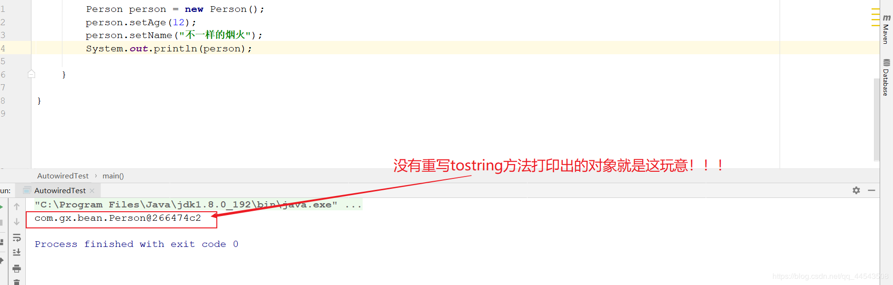
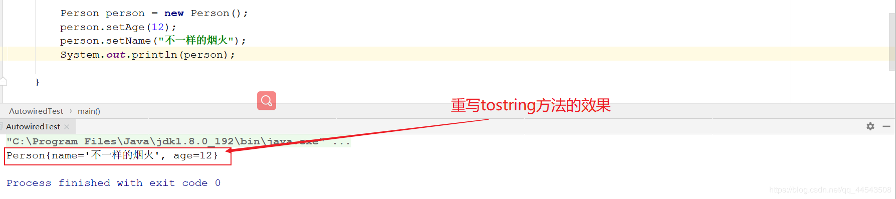

不得不说，有很多java初学者写java实体类的时候，并没有真正理解重写toString() 方法，可能是口头知道也可能是跟风随带添加toString() 方法，并没有真正理解其意义，如果真要被问起来未必有十足把握回答上 ~中枪了咩~，这篇文章旨在帮助初学者正确解读实体类重写toString() 方法。
在Java中每个类都直接或者间接继承
Object类，toString()方法同样来自于Object类。
其实这不难理解，在没有重写tostring的前提下，每次执行System.out.println() 这个方法默认就会调用一个继承自Object 类型对象的toString 方法，这点是非常重要的基础前提！
简单一句话就是重写
toString()可以理解为是对对象在打印输出时候的一种格式化。这样做符合业务逻辑，显示结果人性化。
object类里的toString只是把字符串的直接打印，数字的要转化成字符再打印，而对象，则直接打印该对象的hash码（类似@15db9742 这样的东东）,它的值大概就是等于getClass().getName()+’@’+Integer.toHexString(hashCode()) ,我这乔治脑袋看着都晕，hash码 这玩意是给机器看的，平凡的人类是看不懂的鸭，什么？你要挑战？你相信你就是不一样的烟火？那行，我就举个例子给你看看，你可以试着在一个实体类中...啥？你要我自己来？额...行，我来就我来....
public class Person {
private String name;
private Integer age;
public String getName() {
return name;
}
public void setName(String name) {
this.name = name;
}
public Integer getAge() {
return age;
}
public void setAge(Integer age) {
this.age = age;
}
public Person() {
}
public Person(String name, Integer age) {
this.name = name;
this.age = age;
}
} public static void main(String[] args) {
Person person = new Person();
person.setAge(12);
person.setName("不一样的烟火");
System.out.println(person);
}
现在的开发工具基本都有自动生成tostring() 方法的快捷键，我想大家都懂~

1、没有重写tostring ，每执行System.out.println() 会默认调用Object 的toString 方法，情况如下：
2、重写tostring，每执行System.out.println() 会调用重写的toString 方法，情况则会根据重写的方法打印输出成自己想得到的格式。
3、为了养成良好习惯，建议每次编写实现类都重写一下tostring() 方法！！